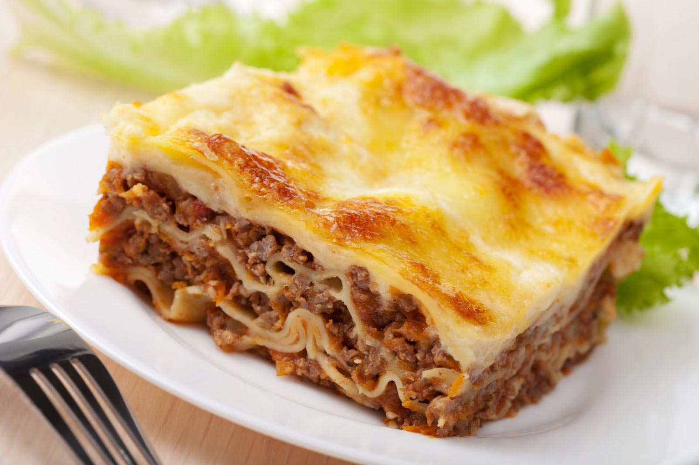

Lasagna
siglo XVII, Italia 
La lasaña (italiano: lasagna) es un tipo de pasta que se sirve en láminas, además de denominarse así también a un plato que tiene pasta en láminas intercaladas con carne (ragú o salsa boloñesa) y bechamel llamado lasaña al horno (Lasagna al forno).
La palabra "lasaña" proviene del griego "lasanon", a través del latín "lasanum", que se refiere al cazo en el que se cocinaba.
La palabra singular en italiano es lasagna y en plural lasagne se aplica indistintamente al plato o a la pasta en forma de láminas. Es una entrada o primer plato caliente que se suele comer en invierno o en los periodos fríos de la primavera.
Su preparación e ingredientes varían según la región donde se prepare. Debido a la internacionalización del plato, en algunos lugares se lo prepara con dos tipos de salsas, como la de carne molida con salsa de tomate y salsa blanca (a este tipo de lasaña se le suele denominar también «lasaña boloñesa» en honor a la salsa boloñesa
Sobre el recipiente refractario se van echando las placas de pasta humedecidas, encima de ellas se vierte el contenido y posteriormente la salsa de bechamel, se repite esta operación hasta llegar a la parte superior en la que se espolvorean virutas de queso para que gratine.
Se mete el recipiente en el horno aproximadamente 20 minutos (el intervalo de tiempo dependerá de la cantidad), el horno debe estar precalentado a 200 grados centígrados. Al final el queso debe estar un poco gratinado.
¡Disfrútenlo!